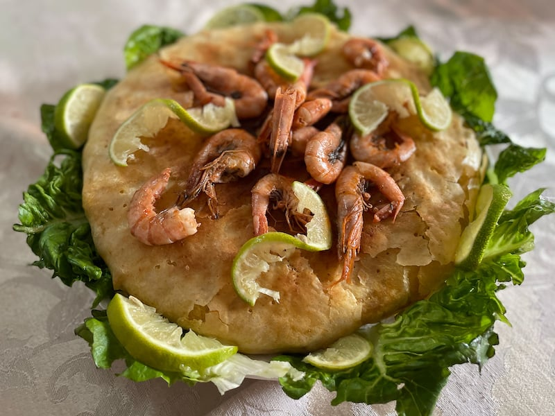

Bastilla

Description
In recent decades, Seafood Bastilla has become an increasingly popular special occasion dish to serve at Moroccan weddings, family celebrations, banquets, holidays, and company dinners.
Seafood bastilla can be shaped into multi-serving pies of any size, including very large bastilla for up to 12 persons; or they can be made into single-serving size, perfect for offering as a special treat during Ramadan or as a starter before another main dish.
Ingredients
- Shrimps
- Calamari
- Swordfish
- Butter
- Tomato sauce
- Parsley
- Olive oil
- Chinese vermicelli
- Dry black mushrooms
- Hot sauce
- Soy sauce
- Warqa pastry sheets
- Cheddar
Steps to follow
- Heat a large skillet over medium-high heat. Melt 1 tablespoon of butter and add the shrimp. Season the shrimp with 1/2 teaspoon each of salt and pepper, and saute for 1 or 2 minutes, just until the shrimp is white and cooked through.
Drain and reserve the liquids and set the shrimp aside.
- In the same skillet over medium heat, melt 1 tablespoon of butter and add the swordfish steak. Season generously with salt and pepper and cook, turning several times, until the fish is cooked and flakes easily.
Drain and reserve the liquids. Break the fish off the bone into bite-size pieces, discarding any skin, and set aside.
- In a skillet with a lid, melt 1 tablespoon of butter over medium heat. Add the calamari and season with 1/2 teaspoon each of salt and pepper. Cover and braise the calamari in the butter and its own juices for 30 minutes or longer, until the calamari is very tender. Add a tiny bit of water during cooking only if the liquids evaporate before the squid is cooked.
- Soak the dried mushrooms in a bowl of cold water for 25 to 30 minutes. Drain and coarsely chop the mushrooms.
- At the same time, soak the Chinese vermicelli in a large bowl of cold water for about 15 to 20 minutes, until tender enough to cut but not fully plumped. Drain and chop into 2″ to 3″ strands.
- Transfer the chopped rice vermicelli to the pot with the tomato sauce. Add the reserved liquids from cooking the fish and seafood and stir to combine. (I find tongs the easiest to use for this.)
To be continued...
Back to all the recipes